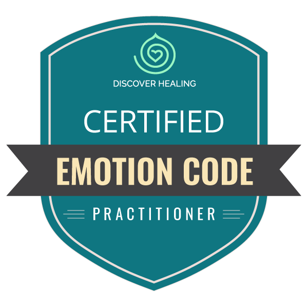
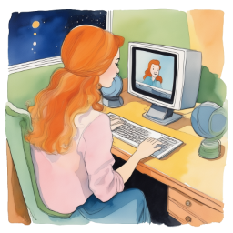

Jasmina Ž.
EC me je res popeljal na pot, ki je nisem pričakovala. Toliko bremen je odpadlo, res je podporna tehnika pri spreminjanju vzorcev in življenja. ❤️
“Čustva so dejansko stvar - energija - ki jo je moč pustiti za sabo.” ~ Dr. Bradley Nelson
The Emotion Code® je energetska tehnika, s katero sproščamo zastala čustva, ki zastajajo v naših telesih in nam onemogočajo, da bi živeli svoj polni potencial (pa naj bo to v smislu odnosov, poslanstva, fizičnega telesa ali čustvenih ran). Zasnovana je tako, da uporabnikom pomaga prepoznati in sprostiti ujeta čustva oz. škodljive čustvene energije negativnih preteklih dogodkov.
Ujeta čustva lahko povzročijo občutke tesnobe, lahko nas blokirajo pred ljubeznijo in srečo in s tem povzročijo, da se počutimo ločene od drugih. Že res, da običajno določena čustva zastanejo v določenih delih teles (npr. žalost v pljučih in jeza v jetrih), a pri Emotion Code velja, da ničesar ne posplošujemo in izhajamo iz tega, da ničesar pravzaprav ne vemo in da lahko vsako čustvo zastane kjerkoli. Zato vsako stvar potestiramo in nemalokdaj ugotovimo, da npr. jeza netipično zastane v desni rami, zapuščenost v maternici, sovraštvo v ledvicah... To je možno zaradi tega, ker so ujeta čustva sestavljena iz energije - tako kot ostali deli telesa - in da vplivajo na fizična tkiva.
Ko čustva zastanejo v okolici srca in se iz njih zgradi kot nekakšno obzidje, ki nas ščiti pred okolico, govorimo o Heart-Wall-u. O tem lahko preberete več na strani, ki je namenjena prav temu.
Zastala čustva so kot kepe, skozi katere naša življenjaska energija ne more steči in je vsaka posebej povezanan z Governing Meridian-om. Z Emotion Code pa sprostimo ta meridian in njegovo povezavo z zastalo energijo v delu telesa, kjer je določeno čustvo zastalo. In ko se sprosti ta povezava, se sprosti tudi zastalo čustvo. Sproščanje je nežno, za uspešno seanso ni treba vrtati v globino in podoživljati travmatičnih dogodkov; sprosti pa se zastala energija v naših telesih in posledično naša podzavest dobi avtocesto, po kateri lahko pošlje zastala čustva naprej. Tako se lahko ustvari ustrezne pogoje za ozdravitev telesa, tako da lahko fizične in čustvene težave izginejo ali postanejo veliko bolj obvladljive.The Emotion Code® se lahko izvaja v živo, prek (video) klica ali pa na daljavo. Učinek je pri vseh 3 načinih dela enak.
Na začetku vedno skupaj postavimo namero, za katero se bo metoda izvajala, potem pa začnem s prepoznavanjem in sproščanjem zastalih čustev v povezavi s to namero. Naenkrat, v enem sessionu, se običajno sprosti 8-15 zastalih čustev, med sproščanjem le-teh pa lahko oseba na drugi strani občuti kakšne mravljince, toploto, zazna kakšen spomin ipd. - seveda čisto odvisno od vsakega posameznika in OK je, če oseba to občuti, kakor je tudi OK, če ne.
Po koncu vsakega sessiona pa v vsakem primeru pošljem zapiske in me lahko še dodatno povprašate o zadevah, povezanih s sproščenimi čustvi.
Posamezen session običajno traja okoli 40 minut, v živo ali prek (klica) pa nekoliko dlje, saj se za takšen način dela večinoma odločajo posamezniki, ki želijo priti do več informacij glede okoliščin, kjer so zastala določena čustva in jih skupaj podrobneje raziskujemo. Še pa 1x poudarjam, da na učinek to raziskovanje detajlov nima vpliva in da lahko, ko delamo na daljavo, postavite dodatna vprašanja naknadno prek mejla.
Trenutno izvajam seanse prek (video) klicev in na daljavo, kjer se vnaprej dogovorimo za termin in delam brez najinega stika.
Večina jih po sessionu opazi, da so lahkotnejši, da se počutijo, kot da bi s sebe odvrgli nekaj bremena. Kadar delamo na zastalih čustvih, ki se dotikajo odnosov z drugimi (v službi, s starši, otroci...) opažajo, da v situacijah, ki so jih včasih trigirale, odreagirajo drugače, kar prinese s sabo tudi drugačen, običajno mirnejši odziv na drugi strani. Ko odstranimo Heart-Wall pa običajno postanemo bolj sproščeni, radostni in bolj ločimo med tem, kaj so naše resnične želje in kaj le pričakovanja drugih.
Življenje postane zopet barvito. občutimo. Pokažejo se nove možnosti. Slišimo se. Smo v svojem stebru. In tako naprej...
Včasih, a pravzaprav precej redko, po seansi priplavajo na površje kakšni manj prijetni občutki - npr. glavobol, močnejše doživjlanje vsega, večja dovzetnost za jok ko se npr. sprosti zastali jok, a to je kratkotrajno in se stabilizira v kratkem času.
Nikoli ne morem reči, kaj boš po seansi občutil/a ti. Kaj bo zate drugače. In ali sploh bo. Verjamem pa, da z The Emotion Code® vsak dobi točno to, kar v danem trenutku potrebuje.
EC me je res popeljal na pot, ki je nisem pričakovala. Toliko bremen je odpadlo, res je podporna tehnika pri spreminjanju vzorcev in življenja. ❤️
Imeli sva session prek videoklica. Želja je bila, odvreči stare zgodbe in priti v stik z dušnim poslanstvom. In mesec kasneje se je po milijon letih skristaliziral želja česa si želim, kam me kliče. Vpisala sem se na nadaljevalni študij ❤️ hvala ti 🙏
Po EC sem se počutila srečno, sproščeno. Največje spremembe pa sem opazila pri moji reakciji, ko se pri otrokih pojavijo čustveni viharji. Zmorem ostati bolj mirna, lahkotna in obdržati fokus, brez da zaplavam oz. padem tudi jaz v ta močna čustva.
Jaz sem največ spuščala zastalo žalost, sem je imela ogromno, več kot večina. Med terapijami sem bila zmedena, po terapijah pa pomirjena, končno me nenadzorovani jok več ne obremenjuje. Svobodnejša sem❤️